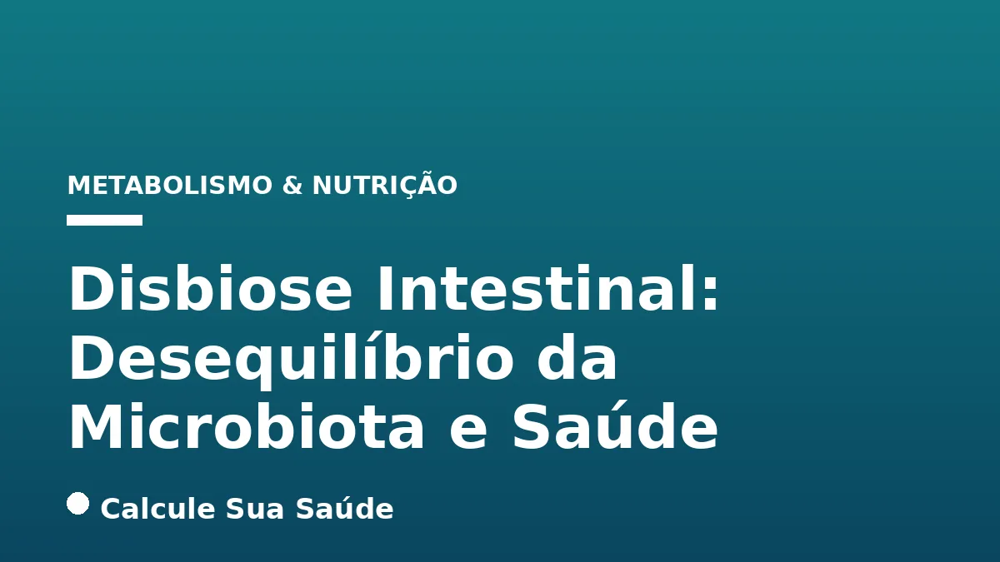

Aviso médico importante
Este conteúdo é educativo e informativo e não substitui a consulta, o diagnóstico ou o tratamento de um profissional de saúde. Em caso de sintomas, procure orientação médica.
Índice do Artigo
- 1. A Microbiota Humana: Um Ecossistema Essencial para a Saúde
- 2. O Que é Disbiose? Desvendando o Desequilíbrio
- 3. Causas e Fatores de Risco da Disbiose: Uma Rede Complexa
- 4. Sintomas da Disbiose: Sinais de Alerta do Corpo
- 5. Diagnóstico da Disbiose: Desafios e Ferramentas Atuais
- 6. Prevenção da Disbiose: Estratégias para um Microbioma Saudável
- 7. Abordagens Terapêuticas para a Disbiose: Restaurando o Equilíbrio
- 8. O Papel Crucial da Dieta: Probióticos e Prebióticos
- 9. Suplementação e Terapias Avançadas: Quando e Como
- 10. Disbiose e Condições Associadas: Uma Visão Integrativa
- 11. Desmistificando a Disbiose: O Que a Ciência Realmente Diz
- 12. Disbiose no Brasil: Dados Epidemiológicos e a Realidade Nacional
- 13. A Importância do Acompanhamento Profissional
- 14. Perguntas frequentes
O corpo humano é um ecossistema complexo, habitado por trilhões de microrganismos que, em conjunto, formam a microbiota. Dentre as comunidades microbianas mais estudadas e de maior impacto na saúde, destaca-se a microbiota intestinal. Quando esse delicado equilíbrio é perturbado, surge a condição conhecida como disbiose.
A disbiose não é uma doença em si, mas uma alteração na composição, diversidade ou função desses microrganismos, que pode estar na raiz de diversas condições clínicas e metabólicas. Compreender a disbiose é fundamental para abordar uma série de problemas de saúde que vão muito além do trato digestivo.
Neste artigo aprofundado, exploraremos o que é a disbiose, suas causas multifatoriais, os sintomas que podem indicar sua presença, os métodos de diagnóstico disponíveis e, crucialmente, as estratégias de prevenção e tratamento baseadas em evidências científicas, com um olhar atento para o contexto brasileiro.
Em resumo
- A disbiose é um desequilíbrio da microbiota, principalmente intestinal, caracterizada pela perda de bactérias benéficas, crescimento de microrganismos nocivos ou redução da diversidade microbiana.
- Suas causas são variadas, incluindo dieta inadequada, uso de antibióticos, estresse crônico, álcool e doenças intestinais preexistentes.
- Os sintomas são amplos e podem incluir problemas digestivos (gases, inchaço, diarreia/constipação), fadiga, alterações de humor e problemas de pele.
- O diagnóstico é desafiador e envolve histórico clínico e, em alguns casos, testes específicos como o de respiração para SIBO ou análise de fezes.
- A prevenção e o tratamento focam em modificações dietéticas (rica em fibras, probióticos e prebióticos), manejo do estresse e uso consciente de medicamentos.
- Probióticos são reconhecidos como eficazes para restaurar a disbiose da microbiota intestinal, mas devem ser usados com orientação profissional.
1. A Microbiota Humana: Um Ecossistema Essencial para a Saúde
O termo microbiota refere-se à comunidade de microrganismos que habitam um determinado ambiente, enquanto microbioma engloba não apenas esses microrganismos, mas também seus genes, metabólitos e as condições ambientais que os cercam. No corpo humano, a microbiota está presente em diversas regiões, como pele, boca, trato urogenital e, de forma mais densa e diversificada, no trato gastrointestinal.
A microbiota intestinal, em particular, é um vasto e complexo ecossistema composto por trilhões de bactérias, vírus, fungos e outros micróbios. Essa comunidade microbiana desempenha funções vitais para a saúde humana, que vão muito além da digestão. Ela é fundamental para a absorção de nutrientes, a síntese de vitaminas (como K e algumas do complexo B), a modulação do sistema imunológico, a proteção contra patógenos e até mesmo a produção de neurotransmissores que influenciam o humor e a função cerebral.
Um microbioma intestinal saudável é caracterizado por uma alta diversidade de espécies e um equilíbrio entre os diferentes grupos de microrganismos, com predominância de bactérias benéficas. Esse equilíbrio é dinâmico e pode ser influenciado por uma série de fatores ao longo da vida.
2. O Que é Disbiose? Desvendando o Desequilíbrio
A disbiose é definida como um desequilíbrio na composição, diversidade ou função das comunidades microbianas que habitam o corpo humano, com especial atenção à microbiota intestinal. Não se trata de uma infecção por um único patógeno, mas sim de uma alteração na proporção e atividade dos microrganismos que normalmente residem em nosso organismo.
Esse desequilíbrio pode se manifestar de três formas principais, que frequentemente ocorrem de maneira simultânea:
- Perda de bactérias benéficas: Redução significativa das espécies de microrganismos que contribuem positivamente para a saúde.
- Crescimento excessivo de bactérias nocivas/oportunistas: Proliferação descontrolada de microrganismos com potencial patogênico.
- Perda de diversidade geral no microbioma: Diminuição da variedade de espécies microbianas, tornando a microbiota mais vulnerável a perturbações.
É crucial entender que a disbiose não é uma doença em si, mas uma condição que pode estar intrinsecamente ligada ao desenvolvimento ou agravamento de diversas patologias e desordens metabólicas.
3. Causas e Fatores de Risco da Disbiose: Uma Rede Complexa
A disbiose é uma condição multifatorial, resultado da interação complexa entre fatores genéticos, ambientais e de estilo de vida. A compreensão dessas causas é essencial para a prevenção e o tratamento eficazes.
Dieta Inadequada
Uma dieta ocidentalizada, rica em açúcar refinado, gorduras saturadas e alimentos ultraprocessados, e pobre em fibras alimentares, é um dos principais fatores de risco. Esses padrões alimentares favorecem o crescimento de bactérias pró-inflamatórias e reduzem a população de microrganismos benéficos. Para aprofundar-se nos impactos do açúcar, veja nosso artigo sobre Açúcar: Efeitos no Corpo e Estratégias para Reduzir o Consumo. Da mesma forma, os Alimentos Ultraprocessados: Riscos e Identificação representam uma ameaça significativa à saúde intestinal.
Uso de Medicamentos
Antibióticos, ao destruírem bactérias benéficas e patogênicas, alteram drasticamente a composição da flora intestinal. Antiácidos também podem contribuir ao alterar o pH gástrico. O uso indiscriminado ou prolongado desses medicamentos pode levar a um desequilíbrio persistente.
Estresse Crônico e Ansiedade
O eixo intestino-cérebro é uma via de comunicação bidirecional. O estresse crônico e a ansiedade podem enfraquecer o sistema imunológico, alterar a motilidade intestinal e a permeabilidade da barreira, e modificar diretamente a composição da microbiota. Para mais informações sobre o impacto do estresse, consulte Cortisol e Estresse Crônico: Neurobiologia.
Outros Fatores Relevantes
- Infecções: Por vírus, bactérias ou parasitas.
- Consumo de Álcool: Doses elevadas são prejudiciais à microbiota. Saiba mais sobre os danos hepáticos em Álcool e Fígado: Da Esteatose à Cirrose.
- Idade: A composição da microbiota muda com a idade.
- Má Higiene Bucal: Pode permitir o crescimento de bactérias patogênicas.
- Privação de Sono: Pode alterar a composição da microbiota.
- Doenças Intestinais Preexistentes: Como Síndrome do Intestino Irritável (SII), Doença Inflamatória Intestinal (DII), doença de Crohn, colite, diverticulite e Síndrome do Intestino Permeável.
- Cirurgias Abdominais: Podem alterar a motilidade intestinal e criar um ambiente propício para o supercrescimento bacteriano.
- Fatores Genéticos e Ambientais: Também influenciam a suscetibilidade à disbiose.
4. Sintomas da Disbiose: Sinais de Alerta do Corpo
Os sintomas da disbiose são notavelmente variados e podem manifestar-se de formas distintas em cada indivíduo, dependendo da gravidade do desequilíbrio e do local predominante onde ocorre. A natureza inespecífica de muitos desses sintomas pode dificultar o diagnóstico, tornando essencial uma avaliação médica detalhada.
Manifestações Digestivas
Os problemas digestivos são os mais comumente associados à disbiose:
- Inchaço e Gases: Sensação de plenitude abdominal, flatulência excessiva e arrotos frequentes.
- Dor Abdominal e Desconforto: Cólicas e dores difusas.
- Alterações do Hábito Intestinal: Diarreia crônica, constipação intestinal (ou alternância). A Constipação Intestinal: Causas, Diagnóstico e Tratamento pode ser um sinal de disbiose.
- Náuseas e Vômitos: Podem ocorrer em casos mais severos.
- Muco nas Fezes: Pode indicar irritação ou inflamação da parede intestinal.
Sintomas Sistêmicos e Extraintestinais
Devido à conexão do intestino com outros sistemas do corpo, a disbiose pode gerar sintomas em outras partes do organismo:
- Fadiga e Cansaço: Sensação persistente de cansaço anormal.
- Problemas de Pele: Condições como eczema, acne ou erupções cutâneas. Para mais sobre acne, veja Acne Adulta: Causas e Tratamentos Eficazes.
- Alterações de Humor: Irritabilidade, ansiedade e depressão. Para entender melhor, consulte Ansiedade: Sintomas e Quando Procurar Ajuda.
- Halitose (Mau Hálito): Pode ser um sinal de desequilíbrio microbiano.
- Imunidade Baixa: Infecções recorrentes.
- Problemas de Concentração: A “névoa cerebral” e a dificuldade de foco.
- Perda de Peso Não Intencional e Má Nutrição: Especialmente em casos de Supercrescimento Bacteriano do Intestino Delgado (SIBO).
A tabela a seguir resume os sintomas mais comuns e suas possíveis implicações:
| Categoria de Sintoma | Sintomas Comuns | Possível Implicação da Disbiose |
|---|---|---|
| Digestivos | Inchaço, gases, dor abdominal, diarreia, constipação, náuseas, muco nas fezes | Fermentação anormal, inflamação intestinal, alteração da motilidade |
| Sistêmicos/Gerais | Fadiga, cansaço, imunidade baixa, perda de peso não intencional | Má absorção de nutrientes, inflamação crônica, desregulação energética |
| Pele | Eczema, acne, erupções cutâneas | Inflamação sistêmica, respostas imunológicas alteradas |
| Humor/Cognição | Irritabilidade, ansiedade, depressão, dificuldade de concentração | Desequilíbrio de neurotransmissores, inflamação no eixo intestino-cérebro |
| Outros | Halitose, coceira vaginal/retal, dificuldade em urinar | Desequilíbrios microbianos em outras mucosas, proliferação de fungos |
5. Diagnóstico da Disbiose: Desafios e Ferramentas Atuais
O diagnóstico da disbiose é um processo complexo e multifacetado, que geralmente envolve uma combinação da análise do histórico médico detalhado (anamnese) e dos sintomas do paciente. Não existe um teste padrão único e amplamente aceito para diagnosticar a disbiose, devido à enorme variação na composição da microbiota intestinal entre indivíduos saudáveis.
Abordagem Clínica Inicial
O primeiro passo é sempre uma avaliação clínica minuciosa. O profissional de saúde investigará o padrão alimentar, o uso de medicamentos, o nível de estresse, a qualidade do sono e a presença de doenças preexistentes. A descrição dos sintomas pelo paciente é crucial, pois a combinação e a persistência de certas manifestações podem levantar a suspeita de disbiose.
Testes Complementares
Embora não sejam diagnósticos definitivos por si só, alguns testes podem ser solicitados para auxiliar na avaliação e identificar desequilíbrios específicos ou condições associadas:
- Teste de Ácidos Orgânicos: Analisa metabólitos produzidos por bactérias e fungos.
- Análise Digestiva Abrangente de Fezes (CDSA): Avalia a saúde digestiva, incluindo bactérias benéficas, patogênicas, fungos, parasitas e marcadores de inflamação.
- Teste de Respiração de Hidrogênio ou Metano: Utilizado principalmente para diagnosticar o Supercrescimento Bacteriano do Intestino Delgado (SIBO).
- Cultura Bacteriana Fecal: Pode identificar a presença e a quantidade de certas bactérias.
- Biópsia: Em casos específicos, como na suspeita de Doença Inflamatória Intestinal (DII).
- Exames de Sangue: Para verificar deficiências vitamínicas ou marcadores inflamatórios.
- Avaliação de Fezes para Má Absorção de Gordura: Indica problemas digestivos e de absorção.
- Exames de Imagem: Raios-X, TC ou RM para procurar anormalidades estruturais.
A análise de metabólitos derivados da microbiota, embora ainda em pesquisa, mostra-se promissora como uma ferramenta útil. A interpretação desses testes deve ser feita por um profissional de saúde experiente.
6. Prevenção da Disbiose: Estratégias para um Microbioma Saudável
A prevenção da disbiose é fundamental para manter a saúde geral e a resiliência do microbioma intestinal. Pequenas, mas consistentes, mudanças no estilo de vida podem ter um impacto significativo.
Uso Consciente de Antibióticos
Antibióticos são ferramentas poderosas, mas seu uso indiscriminado é uma das principais causas de disbiose. É crucial tomá-los apenas quando estritamente necessário, sob orientação médica, e seguir rigorosamente a prescrição.
Redução do Consumo de Álcool
O álcool em doses elevadas é um conhecido agressor da mucosa intestinal e pode alterar negativamente a composição da microbiota. Reduzir ou moderar o consumo é uma medida importante.
Higiene Bucal Adequada
Escovar os dentes após as refeições e usar fio dental regularmente ajuda a prevenir o crescimento excessivo de bactérias patogênicas na boca que podem influenciar a microbiota intestinal.
Manejo do Estresse e Ansiedade
O estresse crônico e a ansiedade têm um impacto direto no eixo intestino-cérebro, podendo levar à disbiose. Práticas como meditação, yoga e exercícios físicos são essenciais. Para aprofundar-se nos sintomas da ansiedade, veja nosso artigo sobre Ansiedade: Sintomas e Quando Procurar Ajuda. Entender a neurobiologia do estresse também pode ser útil, como abordado em Cortisol e Estresse Crônico: Neurobiologia.
Dieta Equilibrada e Rica em Fibras
A alimentação é a ferramenta mais potente para moldar um microbioma saudável. Uma dieta rica em fibras, frutas, legumes, verduras e grãos integrais fornece os substratos necessários para o crescimento de bactérias benéficas. A redução de açúcares refinados, gorduras saturadas e alimentos ultraprocessados é vital. Para mais detalhes sobre os riscos dos alimentos processados, consulte Alimentos Ultraprocessados: Riscos e Identificação.
Outras Medidas Preventivas
- Sono de Qualidade: Priorizar um sono reparador.
- Atividade Física Regular: Associada a maior diversidade e saúde da microbiota.
- Hidratação Adequada: Essencial para a função digestiva.
7. Abordagens Terapêuticas para a Disbiose: Restaurando o Equilíbrio
O tratamento da disbiose é focado na correção da causa subjacente e no restabelecimento do equilíbrio da microbiota intestinal. Dada a natureza multifatorial da condição, a abordagem terapêutica é geralmente individualizada e combina diferentes estratégias.
Modificações Dietéticas como Pilar
A alimentação desempenha um papel central na recuperação da microbiota. As intervenções dietéticas visam nutrir as bactérias benéficas e reduzir a proliferação de microrganismos indesejados. Isso inclui alimentos probióticos (iogurte, kefir, chucrute) e prebióticos (fibras fermentáveis), além de uma dieta rica em fibras e com redução de alimentos inflamatórios.
Suplementos Probióticos
Em alguns casos, a suplementação com probióticos pode ser indicada para introduzir cepas específicas de bactérias benéficas. No entanto, o uso deve ser por um período determinado e sob acompanhamento profissional, pois o uso indiscriminado pode ser ineficaz ou prejudicial. Probióticos são reconhecidos como eficazes e seguros para restaurar a disbiose da microbiota intestinal, quando utilizados corretamente.
Transplante Fecal (Transplante de Microbiota Intestinal - TMI)
Em situações mais graves e específicas, como infecções recorrentes por Clostridioides difficile, o TMI pode ser uma opção terapêutica. Este procedimento envolve a transferência de fezes de um doador saudável para o trato gastrointestinal do paciente, visando restaurar uma microbiota equilibrada.
Antibióticos Específicos
No caso de supercrescimento bacteriano em locais inadequados, como o Supercrescimento Bacteriano do Intestino Delgado (SIBO), antibióticos específicos podem ser o tratamento inicial para reduzir a carga bacteriana. O tratamento pode ser de longo prazo e, por vezes, com alternância de antibióticos para evitar resistência.
Hidrocolonterapia (Lavagens Colônicas)
Em casos graves e selecionados, a hidrocolonterapia pode ser utilizada para remover conteúdos putrefativos. Contudo, sua indicação para o tratamento da disbiose é controversa e carece de evidências científicas robustas, devendo ser realizada com extrema cautela e sob supervisão médica rigorosa.
A evidência para a eficácia de muitas intervenções em humanos ainda está em evolução, com muitos estudos baseados em modelos animais. A escolha de qualquer terapia deve ser sempre baseada em evidências científicas e adaptada às necessidades individuais do paciente.
8. O Papel Crucial da Dieta: Probióticos e Prebióticos
A dieta é, sem dúvida, a ferramenta mais poderosa e acessível para influenciar a composição e a função da microbiota intestinal. Uma alimentação consciente e rica em nutrientes específicos pode promover um ambiente favorável para as bactérias benéficas, auxiliando na prevenção e no tratamento da disbiose.
Alimentos Probióticos
Probióticos são microrganismos vivos que, quando administrados em quantidades adequadas, conferem um benefício à saúde do hospedeiro. A inclusão de alimentos probióticos na dieta é uma estratégia eficaz para introduzir bactérias benéficas. Exemplos comuns incluem:
- Iogurte Natural: Rico em lactobacilos e bifidobactérias (sem açúcar e aditivos).
- Kefir: Bebida fermentada com diversidade de bactérias e leveduras.
- Chucrute e Kimchi: Repolho fermentado (versões não pasteurizadas).
- Kombucha: Chá fermentado.
No Brasil, a ANVISA libera o uso de lactobacilos e bifidobactérias, que são as cepas mais comumente encontradas em produtos como iogurte natural, leite fermentado e kefir.
Alimentos Prebióticos
Prebióticos são componentes alimentares não digeríveis que promovem seletivamente o crescimento e/ou a atividade de bactérias benéficas no cólon, servindo como alimento para as bactérias boas do intestino.
A ingestão adequada de prebióticos é tão importante quanto a de probióticos. Fontes ricas em prebióticos incluem:
- Fibras Solúveis: Aveia, cevada, maçãs, bananas, legumes (feijão, lentilha).
- Frutanos (inulina e FOS): Alho, cebola, aspargos, alcachofra, chicória, banana verde.
- Amido Resistente: Batatas e arroz cozidos e resfriados, banana verde.
Uma dieta variada e rica em vegetais, frutas, leguminosas e grãos integrais garante um aporte adequado de diferentes tipos de fibras prebióticas. Evitar Alimentos Ultraprocessados: Riscos e Identificação e reduzir o Açúcar: Efeitos no Corpo e Estratégias para Reduzir o Consumo também são passos cruciais.
9. Suplementação e Terapias Avançadas: Quando e Como
Além das modificações dietéticas, a suplementação e algumas terapias mais complexas podem ser consideradas no manejo da disbiose, sempre sob orientação e acompanhamento de um profissional de saúde qualificado.
Suplementos Probióticos
Os suplementos probióticos contêm concentrações elevadas de cepas específicas de microrganismos benéficos. Podem ser indicados em situações onde a dieta por si só não é suficiente, como após um curso de antibióticos ou em casos de SIBO. É fundamental que a escolha da cepa, a dosagem e a duração do tratamento sejam determinadas por um profissional, pois o uso indiscriminado pode não trazer os benefícios esperados ou até mesmo agravar o desequilíbrio. A eficácia de probióticos em restaurar a disbiose é reconhecida, mas a especificidade da cepa para cada condição é um campo de estudo contínuo.
Transplante de Microbiota Intestinal (TMI)
O TMI, ou transplante fecal, é uma terapia avançada e altamente eficaz para condições específicas, principalmente para infecções recorrentes por Clostridioides difficile que não respondem a tratamentos convencionais. Consiste na transferência de material fecal de um doador saudável para o trato gastrointestinal do paciente. O TMI é um procedimento complexo, com indicações restritas e que exige rigorosa triagem do doador e acompanhamento médico especializado.
Antibióticos para Supercrescimento Bacteriano
Em condições como o Supercrescimento Bacteriano do Intestino Delgado (SIBO), o tratamento inicial frequentemente envolve o uso de antibióticos específicos para reduzir a população bacteriana excessiva. O tratamento do SIBO pode ser desafiador, exigindo, por vezes, um tratamento de longo prazo e a alternância de diferentes antibióticos para evitar o desenvolvimento de resistência e a recorrência. Após a fase antibiótica, a modulação da dieta e o uso de probióticos e prebióticos são cruciais.
Hidrocolonterapia
A hidrocolonterapia é uma prática que pode ser considerada em casos graves e selecionados, com o objetivo de remover conteúdos putrefativos do intestino. No entanto, sua indicação para o tratamento da disbiose é controversa e carece de evidências científicas robustas. Deve ser realizada apenas sob estrita supervisão médica e em ambientes controlados, devido aos potenciais riscos e complicações.
É fundamental reiterar que a pesquisa sobre a modulação microbiana e suas intervenções em humanos ainda está em evolução. A escolha de qualquer terapia deve ser sempre baseada em evidências científicas e adaptada às necessidades individuais do paciente, sob a orientação de um profissional de saúde.
10. Disbiose e Condições Associadas: Uma Visão Integrativa
A disbiose não é uma entidade isolada, mas sim um fator que pode estar interligado a uma vasta gama de condições de saúde, tanto digestivas quanto sistêmicas. A compreensão dessas associações é crucial para uma abordagem integrativa e eficaz.
Síndrome do Intestino Irritável (SII)
A disbiose é frequentemente observada em pacientes com SII, e acredita-se que o desequilíbrio da microbiota contribua para a inflamação de baixo grau, a hipersensibilidade visceral e a disfunção da motilidade intestinal que caracterizam a síndrome.
Doença Inflamatória Intestinal (DII)
Condições como a Doença de Crohn e a Retocolite Ulcerativa são caracterizadas por inflamação crônica. A disbiose é uma característica proeminente na DII, com uma redução na diversidade microbiana e um aumento de bactérias pró-inflamatórias, podendo precipitar ou perpetuar a inflamação.
Supercrescimento Bacteriano do Intestino Delgado (SIBO)
O SIBO é uma condição específica de disbiose onde há um número excessivo de bactérias no intestino delgado. Os sintomas incluem inchaço, gases, dor abdominal, diarreia e má absorção de nutrientes. É frequentemente uma complicação de outras condições.
Síndrome do Intestino Permeável (Leaky Gut)
A disbiose pode comprometer a integridade da barreira intestinal, permitindo que toxinas e microrganismos passem para a corrente sanguínea, desencadeando respostas inflamatórias e imunológicas que podem contribuir para uma série de condições sistêmicas.
Conexões com Saúde Mental
O eixo intestino-cérebro é uma via de comunicação bidirecional. A disbiose pode influenciar a produção de neurotransmissores, a inflamação e a resposta ao estresse, impactando diretamente a saúde mental. Pacientes com disbiose frequentemente relatam alterações de humor, como irritabilidade, ansiedade e depressão. Para mais informações sobre essas condições, consulte Depressão: Sintomas, Causas, Tipos e Tratamentos e Transtornos de Ansiedade: Guia Completo.
Outras Associações
Estudos sugerem que a disbiose pode estar implicada em condições como obesidade, diabetes tipo 2, doenças autoimunes, alergias e doenças cardiovasculares. A complexidade dessas interações ressalta a importância de uma visão holística da saúde.
11. Desmistificando a Disbiose: O Que a Ciência Realmente Diz
No campo da saúde e bem-estar, onde informações se proliferam rapidamente, é comum que mitos e equívocos surjam, especialmente em temas complexos como a disbiose. É fundamental basear-se em evidências científicas para distinguir a verdade da desinformação.
Mito 1: Disbiose é uma infecção causada apenas por bactérias "ruins".
O Que a Ciência Diz: A disbiose não é uma infecção no sentido tradicional, mas um desequilíbrio na comunidade de microrganismos que já habitam o corpo. Ela pode ocorrer devido à diminuição de bactérias benéficas, ao crescimento excessivo de microrganismos oportunistas ou a uma perda geral da diversidade microbiana. Não se trata apenas da presença de bactérias "ruins", mas de uma alteração na proporção e função de todo o ecossistema microbiano.
Mito 2: O tratamento da disbiose consiste em "limpar o intestino" ou seguir dietas extremamente restritivas.
O Que a Ciência Diz: A ideia de "limpar o intestino" através de métodos extremos não tem respaldo científico robusto e pode, inclusive, ser prejudicial. Dietas excessivamente restritivas podem privar a microbiota de nutrientes essenciais e reduzir ainda mais a diversidade microbiana. O tratamento eficaz da disbiose se baseia em uma abordagem equilibrada e personalizada, incluindo uma alimentação rica em fibras, frutas, legumes e alimentos fermentados, juntamente com a identificação e correção da causa subjacente. O acompanhamento profissional é indispensável.
Mito 3: Qualquer probiótico serve para tratar qualquer tipo de disbiose.
O Que a Ciência Diz: A eficácia dos probióticos é altamente específica para a cepa e a condição. Diferentes cepas têm diferentes mecanismos de ação e benefícios. A escolha de um suplemento probiótico deve ser feita com base em evidências científicas e sob orientação de um profissional de saúde que possa avaliar a necessidade individual e indicar a cepa mais apropriada.
É fundamental que os indivíduos busquem informações em fontes confiáveis e consultem profissionais de saúde para um diagnóstico preciso e um plano de tratamento baseado em evidências, evitando soluções milagrosas ou abordagens sem embasamento científico.
12. Disbiose no Brasil: Dados Epidemiológicos e a Realidade Nacional
A disbiose, embora seja um conceito global, manifesta-se com particularidades em diferentes populações, influenciada por fatores genéticos, ambientais e pelos hábitos alimentares e de vida locais. No Brasil, estudos têm buscado mapear a prevalência de sinais e sintomas sugestivos de disbiose em diversas populações.
Prevalência de Sintomas Sugestivos
Uma revisão de literatura que analisou artigos sobre a prevalência de sinais e sintomas sugestivos de disbiose intestinal na população brasileira, utilizando o Questionário de Rastreamento Metabólico (QRM), identificou que os sintomas mais prevalentes foram:
- Gases intestinais
- Desconforto abdominal
- Obesidade
- Cólicas, diarreias, prisão de ventre e constipação intestinal
Esses achados reforçam a ideia de que problemas digestivos são os indicadores mais comuns de um desequilíbrio na microbiota.
Estudos com Populações Específicas
- Estudantes de Nutrição: Em um estudo, 31,5% apresentaram risco de disbiose intestinal. Outro estudo verificou que 25,7% da amostra apresentava sinais e sintomas de disbiose, sendo arrotos e/ou gases o sintoma mais relatado (77,22%). Foi encontrada uma associação significativa entre ansiedade e disbiose intestinal.
- Adultos em Santa Catarina: Um estudo com 84 adultos identificou flatulência como o sintoma mais destacado (41,66%). Leite (53,33%), feijão (45%) e trigo/centeio (45%) foram os alimentos que mais desencadearam sintomas. Houve uma associação significativa entre os sintomas de disbiose intestinal e a presença de Doenças Crônicas Não Transmissíveis (DCNT).
- Pacientes Hospitalizados: Um estudo realizado em 2019 avaliou o risco de disbiose intestinal, mas não encontrou associações significativas com variáveis sociodemográficas, econômicas, clínicas e antropométricas, possivelmente devido a outros fatores de saúde agudos ou à metodologia.
Os dados epidemiológicos brasileiros, embora ainda em desenvolvimento, apontam para uma prevalência considerável de sintomas sugestivos de disbiose na população, destacando a necessidade de maior conscientização, pesquisa e abordagens clínicas eficazes.
13. A Importância do Acompanhamento Profissional
Diante da complexidade da disbiose e da vasta gama de sintomas e causas associadas, a busca por um acompanhamento profissional qualificado é de suma importância. A autoavaliação e o autotratamento, especialmente com base em informações não verificadas, podem levar a diagnósticos equivocados, tratamentos ineficazes ou até mesmo ao agravamento da condição.
Um médico ou nutricionista especializado em saúde intestinal poderá realizar uma anamnese detalhada, considerar o histórico clínico completo, solicitar os exames complementares mais adequados (se necessários) e interpretar seus resultados no contexto individual do paciente. Essa abordagem personalizada é crucial, pois o que funciona para uma pessoa pode não ser eficaz para outra, dada a singularidade de cada microbioma e de cada organismo.
O profissional de saúde poderá orientar sobre as modificações dietéticas mais apropriadas, a necessidade e o tipo de suplementação, o manejo do estresse e outras intervenções no estilo de vida. Além disso, ele será capaz de identificar e tratar quaisquer condições subjacentes que possam estar contribuindo para a disbiose.
Lembre-se: este artigo tem caráter informativo e educativo e não substitui a consulta com um profissional de saúde. A saúde do seu intestino é um pilar fundamental para o seu bem-estar geral, e investi-la com o suporte adequado é a melhor decisão.
14. Perguntas frequentes
O que é disbiose intestinal?
Disbiose intestinal é um desequilíbrio na composição e função da microbiota que habita o trato gastrointestinal. Isso pode envolver a diminuição de bactérias benéficas, o crescimento excessivo de microrganismos oportunistas ou a perda geral da diversidade microbiana, impactando a saúde.
Quais são os principais sintomas da disbiose?
Os sintomas são variados e podem incluir problemas digestivos como inchaço, gases, dor abdominal, diarreia ou constipação. Além disso, podem surgir sintomas sistêmicos como fadiga, problemas de pele (eczema, acne), alterações de humor (ansiedade, depressão) e imunidade baixa.
Como a dieta influencia a disbiose?
A dieta é um dos fatores mais influentes. Uma alimentação rica em fibras, frutas, vegetais e alimentos fermentados (probióticos) promove uma microbiota saudável. Por outro lado, dietas ricas em açúcar refinado, gorduras saturadas e alimentos ultraprocessados podem favorecer o desequilíbrio e a disbiose.
Antibióticos podem causar disbiose?
Sim, o uso de antibióticos é uma das principais causas de disbiose. Eles destroem não apenas as bactérias patogênicas, mas também as benéficas, alterando drasticamente a composição da microbiota intestinal. Por isso, devem ser usados com cautela e sob orientação médica.
Existe um teste específico para diagnosticar disbiose?
Não há um teste padrão único para diagnosticar a disbiose devido à grande variação da microbiota entre indivíduos saudáveis. O diagnóstico geralmente se baseia na análise do histórico médico e dos sintomas. Testes como o de respiração para SIBO ou análises abrangentes de fezes podem ser usados como ferramentas auxiliares.
Probióticos são sempre indicados para disbiose?
Probióticos são reconhecidos como eficazes e seguros para restaurar a disbiose em muitos casos. No entanto, a escolha da cepa, a dosagem e a duração do tratamento devem ser individualizadas e feitas sob acompanhamento profissional. O uso contínuo e sem orientação pode não ser benéfico ou até mesmo prejudicial.
A disbiose pode afetar o humor?
Sim, a disbiose pode afetar o humor devido à complexa comunicação entre o intestino e o cérebro, conhecida como eixo intestino-cérebro. Desequilíbrios na microbiota podem influenciar a produção de neurotransmissores e a inflamação, contribuindo para sintomas como irritabilidade, ansiedade e depressão.
Qual a importância do acompanhamento profissional no tratamento da disbiose?
O acompanhamento profissional é crucial. Um médico ou nutricionista pode realizar um diagnóstico preciso, identificar as causas subjacentes, e elaborar um plano de tratamento personalizado e baseado em evidências, que pode incluir modificações dietéticas, suplementação e manejo do estilo de vida, garantindo a segurança e eficácia.
Leia também
Referências e Fontes
1. Apollo Hospitals. Disbiose - Causas, Sintomas, Diagnóstico e Tratamento. Disponível em: vertexaisearch.cloud.google.com
2. UL-250. O que é a Disbiose Intestinal e porque acontece?. Disponível em: ul250.com
3. Alta Diagnósticos. Disbiose: o que é, causas e sintomas. Disponível em: altadiagnosticos.com.br
4. Biocodex Microbiota Institute. Já ouviu falar de “disbiose”?. Disponível em: biocodexmicrobiotainstitute.com
5. Cleveland Clinic. Dysbiosis. Disponível em: my.clevelandclinic.org
6. Melcarne Nutrição. 7 Verdades que Ninguém Te Contou Sobre a Disbiose. Disponível em: melcarnenutricao.com.br
7. National Institutes of Health (NIH). The Human Microbiome Project. Disponível em: pmc.ncbi.nlm.nih.gov
8. Zotarelli Filho Scientific Works. Disbiose-intestinal.pdf. Disponível em: ijn.zotarellifilhoscientificworks.com